Flag2
dos:4b3l4rd0fru705
Let's login via SSH
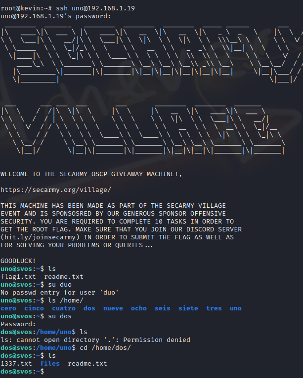
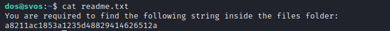
a8211ac1853a1235d48829414626512a
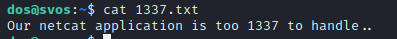
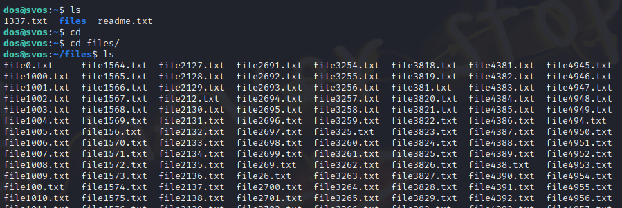
99, 9 ,98, 97, 96, 94
Using shell script....
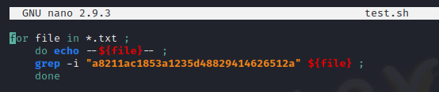
fish in the net
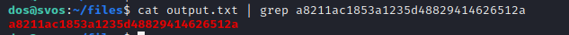
now using search feature of nano
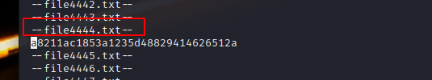
In file4444 we get
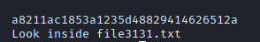
In file 3131 we get
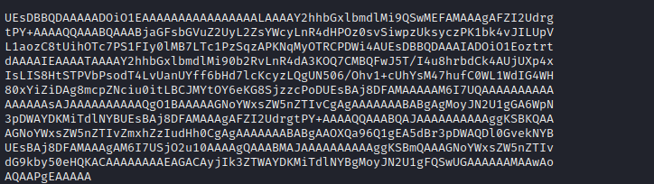
UEsDBBQDAAAAADOiO1EAAAAAAAAAAAAAAAALAAAAY2hhbGxlbmdlMi9QSwMEFAMAAAgAFZI2Udrg
tPY+AAAAQQAAABQAAABjaGFsbGVuZ2UyL2ZsYWcyLnR4dHPOz0svSiwpzUksyczPK1bk4vJILUpV
L1aozC8tUihOTc7PS1FIy0lMB7LTc1PzSqzAPKNqMyOTRCPDWi4AUEsDBBQDAAAIADOiO1Eoztrt
dAAAAIEAAAATAAAAY2hhbGxlbmdlMi90b2RvLnR4dA3KOQ7CMBQFwJ5T/I4u8hrbdCk4AUjUXp4x
IsLIS8HtSTPVbPsodT4LvUanUYff6bHd7lcKcyzLQgUN506/Ohv1+cUhYsM47hufC0WL1WdIG4WH
80xYiZiDAg8mcpZNciu0itLBCJMYtOY6eKG8SjzzcPoDUEsBAj8DFAMAAAAAM6I7UQAAAAAAAAAA
AAAAAAsAJAAAAAAAAAAQgO1BAAAAAGNoYWxsZW5nZTIvCgAgAAAAAAABABgAgMoyJN2U1gGA6WpN
3pDWAYDKMiTdlNYBUEsBAj8DFAMAAAgAFZI2UdrgtPY+AAAAQQAAABQAJAAAAAAAAAAggKSBKQAA
AGNoYWxsZW5nZTIvZmxhZzIudHh0CgAgAAAAAAABABgAAOXQa96Q1gEA5dBr3pDWAQDl0GvekNYB
UEsBAj8DFAMAAAgAM6I7USjO2u10AAAAgQAAABMAJAAAAAAAAAAggKSBmQAAAGNoYWxsZW5nZTIv
dG9kby50eHQKACAAAAAAAAEAGACAyjIk3ZTWAYDKMiTdlNYBgMoyJN2U1gFQSwUGAAAAAAMAAwAo
AQAAPgEAAAAA
Using Cyberchef
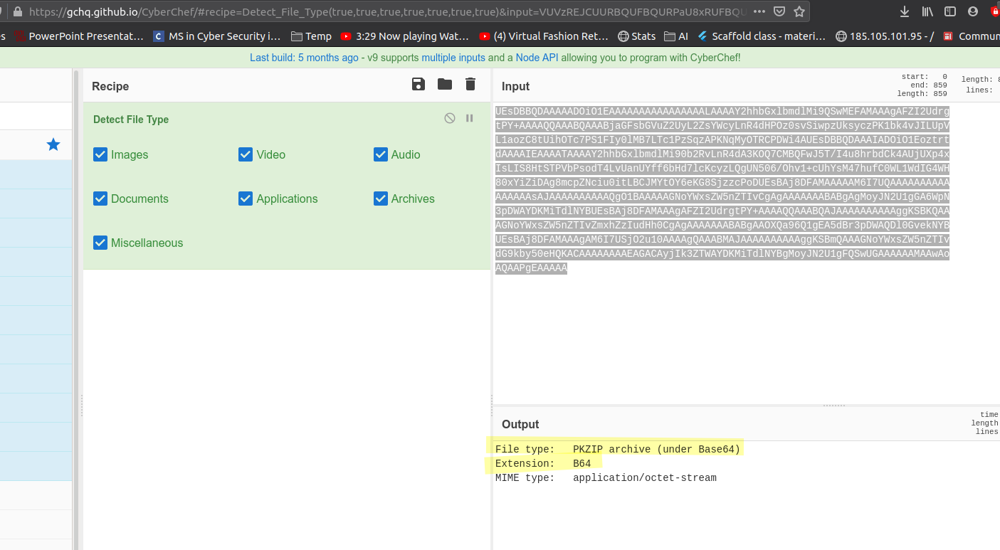
So we created the file of message then decoded it using base64 and stored the output in a zip
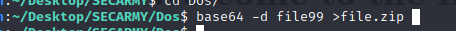
And t gave use zip with flag2
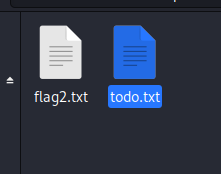
Inside To super secrete token : c8e6afe38c2ae9a0283ecfb4e1b7c10f7d96e54c39e727d0e5515ba24a4d1f1b
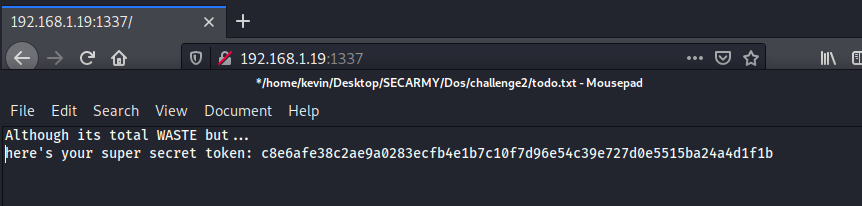
So we previously know the port 1337 runs netcat so
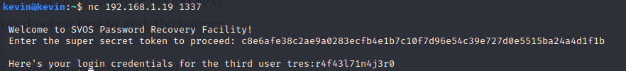